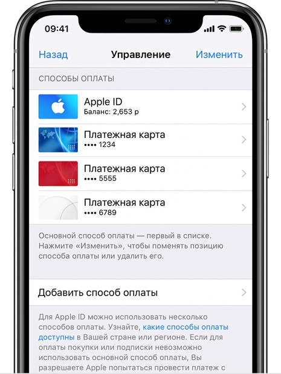
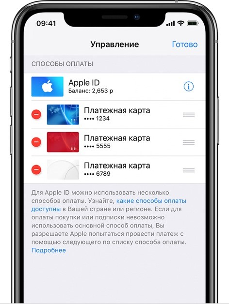

Изменение, добавление или удаление способов оплаты для Apple ID
Управляйте платежной информацией, которая используется в App Store, iTunes
Store, iCloud и т. д. После изменения платежной информации она
автоматически обновляется для всех программ и служб, в которых
используется ваш идентификатор Apple ID.
Изменение способа оплаты на iPhone, iPad или iPod touch
Откройте «Настройки».
Нажмите свое имя и выберите
«iTunes Store и App Store».*
Выберите свой идентификатор Apple ID (обычно это ваш адрес электронной
почты) и коснитесь«Просмотреть Apple ID». Может
потребоваться выполнить вход.
Нажмите «Управление платежами». (При использовании более ранней
версии iOS нажмите «Платежная информация».) После этого можно добавлять,
редактировать и удалять способы оплаты, а также менять их порядок.
Изменение или добавление

Обновление способа оплаты
Нажмите способ оплаты, который хотите изменить, и измените информацию.
Может потребоваться ввести код безопасности, указанный на кредитной или
дебетовой карте. Если после последних четырех цифр номера карты
отображается значок Apple Pay, перейдите в программу Wallet, чтобы
отредактировать данные карты.
Добавление способа оплаты
Нажмите «Добавить способ оплаты».
Удаление или изменение порядка

Удаление способа оплаты
Нажмите «Изменить», затем значок
«Удалить» или смахните влево и нажмите «Удалить».
Изменение порядка способов оплаты
Нажмите «Изменить», затем используйте значок перемещения,
чтобы изменить порядок способов оплаты. Apple предпринимает попытки
списания средств начиная с первого способа оплаты и далее по списку.
Порядок, согласно которому средства списываются с остатка на счете Apple
ID, изменить невозможно.
* В ОС iOS 12.2 или более поздней версии можно также управлять способами
оплаты в меню «Настройки» > [ваше имя] > «Оплата и доставка». При
изменении способов оплаты в разделе «Оплата и доставка» на устройстве с
iOS 12.1.x или более ранней версии все сохраненные способы оплаты будут
удалены.
Изменение способа оплаты на компьютере Mac
Откройте App Store на компьютере Mac.
Нажмите свое имя или кнопку «Войти» в нижней части боковой панели.
Нажмите «См. информацию».
Нажмите «Управление платежами» возле пункта
«Платежная информация». (При использовании более ранней версии
macOS нажмите «Правка» справа от пункта «Тип платежа».) Возможно,
потребуется выполнить вход с помощью идентификатора Apple ID.
Здесь можно выполнить несколько действий.
Изменение способа оплаты: щелкните «Правка» рядом со способом
оплаты. Может потребоваться ввести код безопасности, указанный на
кредитной или дебетовой карте.
Добавление способа оплаты: щелкните «Добавить способ оплаты».
Удаление способа оплаты: щелкните «Правка» рядом со способом оплаты,
а затем — «Удалить».
Изменение порядка способов оплаты: наведите курсор на способ оплаты
и используйте значок перемещения . Apple предпринимает попытки
списания средств начиная с первого способа оплаты и далее по списку.
Порядок, согласно которому средства списываются с остатка на счете
Apple ID, изменить невозможно.
Если настроена функция «Семейный доступ» и включен общий доступ к покупкам, взрослый, выступающий как организатор семейного доступа, настраивает один способ оплаты для всех участников группы семейного доступа. Более подробные сведения о семейных покупках и платежах приведены в этой статье.
Организатор семейного доступа может привязать несколько способов оплаты к своему Apple ID, но члены семьи смогут использовать только первый способ в списке. Если член семьи не может совершить покупку, организатор семейного доступа может поместить другой способ оплаты на верхнюю позицию в списке.